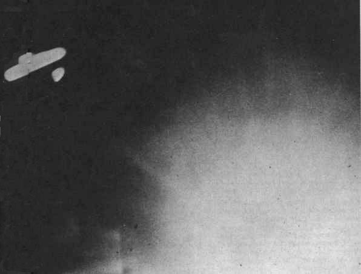

Un "aéronef fantôme" tel qu'il aurait
été photographié cette année-là Clark, Jerome E. & Farish, Lucius: "The Phantom Airships of 1913", UFO Report de Saga, vol. 1, n° 6, Eté 1974, p. 36.

A Dover, 3 pêcheurs voient un dirigeable, doté d'une lumière,
s'approcher de la mer et voler vers le nord-est (vers l'Atlantique?). Il vole à grande vitesse malgré un fort
vent d'ouest.
Le capitaine L. Lindsay, commissaire de police de la Glamorganshire (Wales), voit un aéronef voler au-dessus de Cardiff, traînant derrière lui
une grande masse de fumée et remarque qu'il est bien plus gros et plus rapide que le dirigeable local de
marque Willow. 30 mn plus tard, Steven Morgan voit un engin semblable traîî de la fumée au-dessus
de Merthyr, 48 km plus loin — ce qui implique une très grande vitesse de déplacement pour un dirigeable de
l'époque Brookesmith, Peter: UFO: The Complete Sightings, Barnes & Noble Inc., New York, N.Y., 1995, p. 28 < Trainor, Joseph: UFO Roundup, vol 7, n° 4, 22 janvier 2002.
A Dunedin (Nouvelle Zélande), observation d'un aéronef passant
au-dessus de la ville Otago Daily Times <
"That Mysterious Airship", Argus de Grey River (Nouvelle Zélande), 21 janvier 1913.
"L'ombre noire de l'aéronef", carte de cette année-là décrivant la portée, depuis la base supposée de
dirigeables de Heligoland (Allemagne) des Zeppelins (cercle le plus externe à 600 miles) et des aéroplanes
(300 miles) "Nearly a century of circles", Airminded, 15 février 2006
Une ville de la province canadienne de Saskatchewan est le théâtre d'un défilé de lumières rougeoyantes observé
par des centaines de témoins. On commence à parler d'aéroplanes fantômes et non plus de dirigeables comme
dans les années précédentes.
Un grand objet en forme de cigare survole
lentement Milwaukee et Sheboygan (Wisconsin), faisant clignoter ses projecteurs sur les
rues et les habitations, puis se retire vers le Lac Michigan UFO Roundup, 4-36.
On observe une procession de météores en formation passer à
l'horizontale au-dessus du Canada et de l'Est de Etats-Unis. Ils restent visibles sur un parcours de plus de
9000 km. Tout au long de leur parcours, on entend de grosses explosions, des détonations, et on ressent des
secousses sismiques Chant (professeur), Toronto.
Observations dans le Yorkshire.
Premières observations en Belgique et en Hollande.
En France, on accuse des dirigeables allemands d'espionner la frontière orientale.
ou Des lumières et des engins sont observés au-dessus de
Warnwickshire et de Norfolk. Un airship est observé par deux hommes draguant la rRiver Ouse à Beningborough
(Yorkshire). Les hommes revoient l'airship à 4 h du matin le jour suivant et l'observent durant 30 mn.
Les apparitions débutent en Allemagne.
Un dirigeable visite Tarnowitz (Prusse).
Au lac Schwielow, un dirigeable en feu est observé s'écrasant dans la forêêhe. Cependant, après de
sérieuses recherches, on ne retrouve aucune épave.
"Meteor Explodes At Sea / Gives Passengers on Steamship a Bad Fright", Tribune de New York 30 mars 1913, p. 11.
A Shelby (Yorkshire, Angleterre), un appareil aérien est observé
faisant de la reconnaissance pendant 1 h "Air Spies Startle Britain", Evening Gazette de Indiana (Pennsylvanie), 24 mai 1913.
Train express dont les fenêtres sont illuminéesDenning, W. F. (astronome): SRACPottier,
1974.
Eté
Près de Benton Harbor (Michigan), observation d'un
"zeppelin" "Phantom Airship Rides High In Skies", News-Palladium de Benton Harbor (Michigan), 24 juin 1913.
ou Près de la rivière Saint Joseph (près de Benton Harbor, Michigan),
observation d'un grand aéronef "Phantom Ships Float On High", News-Palladium de Benton Harbor (Michigan), 10 juillet 1913.
Fin de l'été entre et En Moravie (Tchécoslovaquie),
un jeune homme de 20 ans voyage depuis Brnoyto Zidence par temps clair, voit 6 objets très haut dans le ciel
ressemblant à de grandes étoiles rouges flamboyantes, se déplaçant sans bruit autour d'un point fixe dans le
sens des aiguilles d'une montre. Cette formation d'"étoiles" suit une orbite elliptique d'un diamètre apparent
de 1 m (le témoin détermine cela en tendant son bras). Il observe le phénomène durant 6 à 8 mn, puis reprend son
chemin sans attendre la fin Chaloupek, H.: Phénomènes Spatiaux n° 11, 1967; dessin p. 209.
Automne A Auggedal (Norvège), des personnes voient
une boule lumineuse arriver du Sud avec un sifflement dans leur direction. Elle passe entre eux et une grange, à 10
m. La boule est de la taille d'un ballon de rugby, et le passage entre la grange et les témoins se fait à une
hauteur de 5 à 6 m au-dessus du sol. Puis la boule remonte et disparaît au-dessus d'une colline. L'objet brillait
fortement. Les témoins sont P.O. Møller, Tor Flatum et Gunn Berget. La totalité de l'observation a duré 40 s
environ, durant lesquelles la boule lumineuse a parcouru une dizaine de km UFO report form, 31 mars 1965.